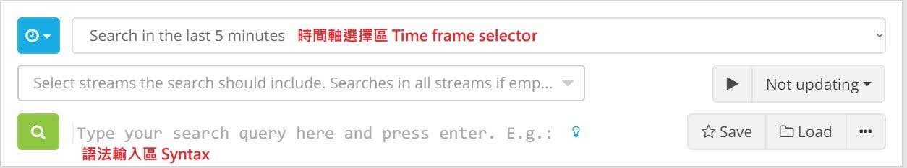
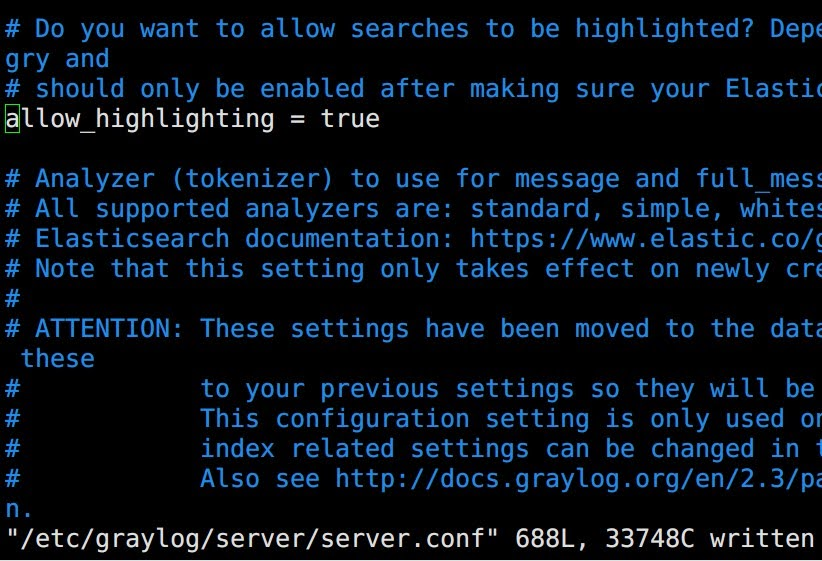
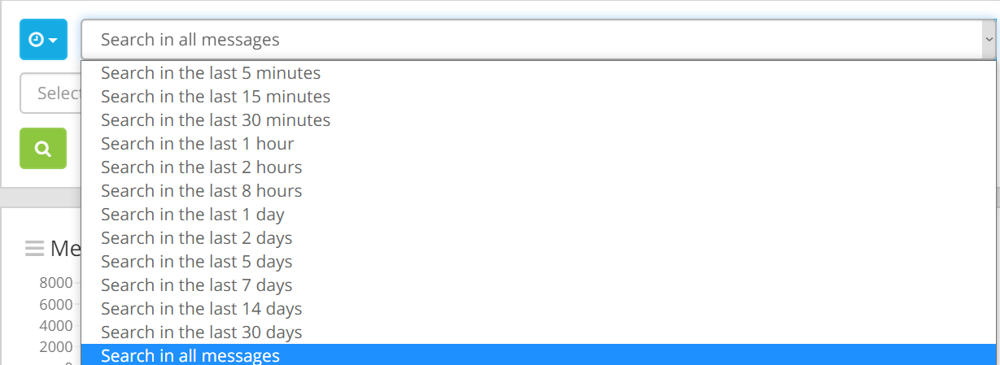
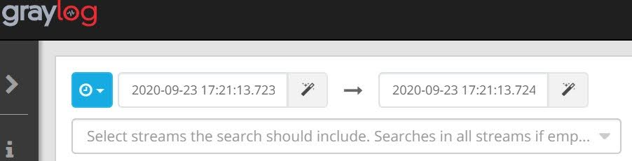
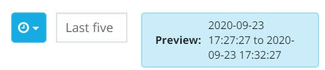

Graylog 搜尋語法
Contents

在開始之前可以將設定檔內的 allow_highlighting = true 打開，獲得螢光筆功能
Enabling/Disabling search result highlighting

基礎搜尋語法 Syntax
Graylog 語法支援正規表示法 (RegEXP)
搜尋 Message 包含 ssh 的 log
|
|
搜尋 Message 包含 ssh 或 (OR) login 的 log
|
|
搜尋 Message 包含 ssh<空格>login 的 log
|
|
搜尋 Message 包含欄位名稱 (type) ssh 的 log
|
|
搜尋 Message 包含欄位名稱 (type) ssh 或 (OR) login 的 log
這邊注意!! 如果使用 Elasticsearch 6.x 版本，不可將 OR 替換成 <空白>
|
|
搜尋 Message 包含正規表示法 (RegEXP) 的 log
|
|
搜尋來源為 jumpserver 的所有 log
|
|
時間軸選擇區 Time fram selector
以事件發生時間限制搜尋結果 Time frame selector
時間軸分為三種:
|
|
- Relative 相對時間
不囉嗦直接上圖，一看就懂

- Absolute 絕對時間
一句話講完: 西元幾年幾月幾日幾點幾分 到 西元幾年幾月幾日幾點幾分

- keyword 關鍵字時間
近似自然語言的方式，以下舉例:
last month上個月4 hours age四小時前1st of April to 2 days ago四月一號到兩天前

Author
LastMod 2022-09-14 (53d840d)